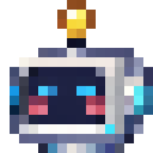
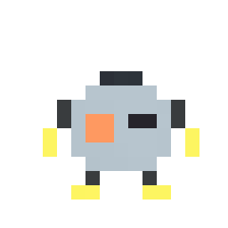
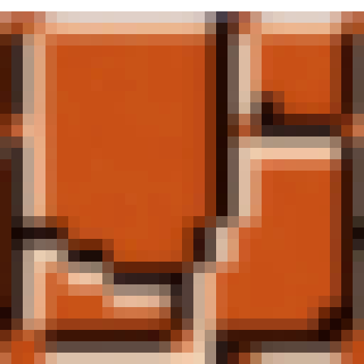
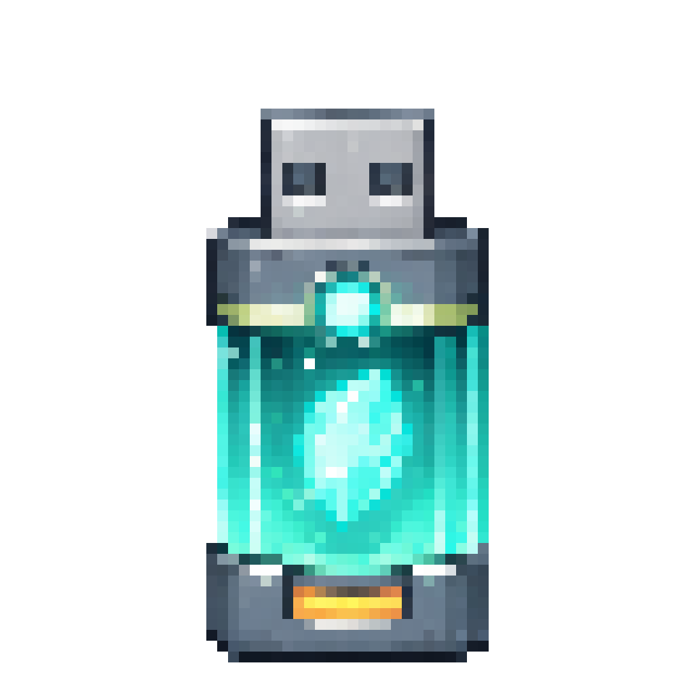
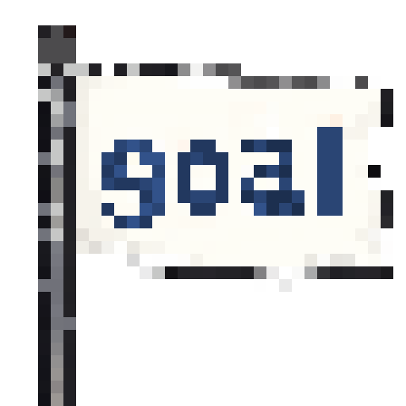
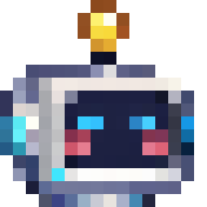

移動する
WASD または矢印キーで、ロボを左右に動かします。
How to play
magnetGOは、頭を取り外せる小さなロボの2Dパズルゲーム。
頭を磁力の起点にして、金属箱を動かし、USBを出口まで運ぼう。


MAGNET01
Basic controls
WASD または矢印キーで、ロボを左右に動かします。
Space で頭をその場に置きます。もう一度近づけば回収できます。
02
Core mechanic
頭を置いた場所が磁力の中心です。本体を別の場所へ動かしても、力の向きは頭の位置で決まります。

Attract
金属箱を頭の方向へ動かします。
Repel
金属箱を頭から遠ざけます。
03
Mission

本体でUSBの場所まで進みます。
USBを持った本体で、頭に近づきます。

頭を装着して出口へ入ればクリアです。
Behind the game
「頭を置いた位置が磁力の起点になる」という一つのルールから、箱の移動、足場作り、ジャンプ、スイッチ操作へ展開することを意識して設計しました。

Ready?